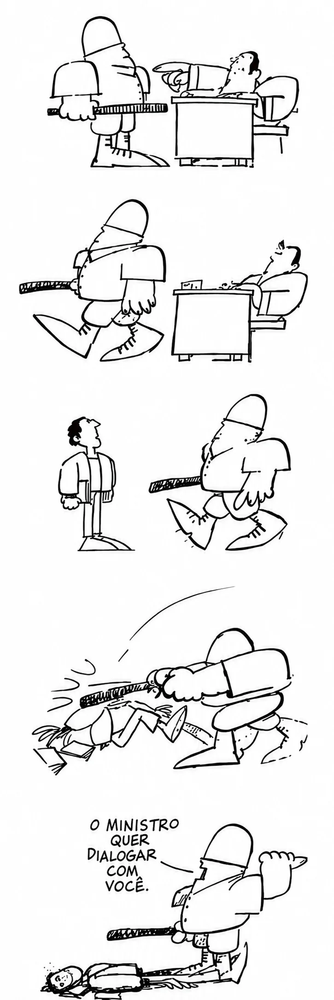

O AI-5 e o Endurecimento da Ditadura Militar
Texto de apoio[...] o AI-5, de 13 de dezembro de 1968, foi um instrumento que deu ao regime poderes absolutos e cuja primeira consequência foi o fechamento do Congresso Nacional por quase um ano e o recesso dos mandatos de senadores, deputados e vereadores, que passaram a receber somente a parte fixa de seus subsídios.
Entre outras medidas do AI-5, destacam-se:
- suspensão de qualquer reunião de cunho político;
- censura aos meios de comunicação, estendendo-se à música, ao teatro e ao cinema;
- suspensão do habeas corpus para os chamados crimes políticos;
- decretação do estado de sítio pelo presidente da República em qualquer dos casos previstos na Constituição;
- autorização para intervenção em estados e municípios. [...]
Referência (ABNT NBR 6023)
PONTUAL, Helena Daltro. História das Constituições. Disponível em: <www.senado.gov.br/noticias/especiais/constituicao25anos/historia-das-constituicoes.htm>. Acesso em: 9 nov. 2018.
✍️ Questões Dissertativas
1 De acordo com o texto, quais foram as principais consequências do AI-5 para o Congresso Nacional e para os mandatos de senadores, deputados e vereadores?
0 caracteres (mínimo 60)
Comentário do professor
O AI-5 deu ao regime poderes absolutos e, como primeira consequência, fechou o Congresso Nacional por quase um ano. Os mandatos de senadores, deputados e vereadores entraram em recesso: os parlamentares deixaram de exercer suas funções e passaram a receber apenas a parte fixa de seus subsídios. Na prática, o Legislativo foi anulado como espaço de representação e de controle sobre o Executivo.
2 Cite três medidas previstas pelo AI-5 que restringiam diretamente os direitos e liberdades da população brasileira.
0 caracteres (mínimo 60)
Comentário do professor
Entre as medidas possíveis: a suspensão de qualquer reunião de cunho político, que acabava com a liberdade de reunião e organização; a censura aos meios de comunicação, estendida à música, ao teatro e ao cinema, que atingia a liberdade de expressão e a produção artística; e a suspensão do habeas corpus para crimes políticos, que retirava a principal garantia contra prisões arbitrárias. Também valem a decretação do estado de sítio pelo presidente e a intervenção em estados e municípios.
“O ministro quer dialogar com você”
Fonte iconográfica · charge de Ziraldo
Essa charge de Ziraldo ironiza a truculência do Regime Militar. Correio da Manhã, ano 68, n. 23068, 23 de junho de 1968.
3 Observe a charge de Ziraldo. Descreva a sequência de ações representada nos quadrinhos, desde o primeiro até o último quadro.
0 caracteres (mínimo 60)
Comentário do professor
No primeiro quadro, uma autoridade sentada atrás de uma mesa dá ordens a um policial armado com um cassetete. No segundo, o policial sai apressado do gabinete. No terceiro, ele corre na direção de um homem comum, parado na rua. No quarto, derruba esse homem e o espanca com o cassetete. No último quadro, de pé sobre o corpo caído, o policial anuncia: “o ministro quer dialogar com você”.
4 Na charge, a frase final é “O ministro quer dialogar com você”, dita logo após a violência sofrida pelo personagem. Explique a ironia contida nessa frase e relacione-a com a truculência do regime militar mencionada na legenda.
0 caracteres (mínimo 60)
Comentário do professor
A ironia está no contraste entre a palavra “dialogar” e a cena mostrada: o convite à conversa chega depois da agressão e a quem já está caído no chão, sem condições de responder. Ziraldo sugere que o “diálogo” oferecido pelo regime era falso — na prática, o governo só se comunicava com a sociedade pela força. A charge critica assim a truculência do Regime Militar, que apresentava uma fachada de negociação enquanto usava a violência policial para calar quem discordava.
5 Relacione o conteúdo da charge com o texto sobre o AI-5: de que forma a imagem representa, de maneira crítica, a falta de liberdade de expressão e o uso da força que caracterizavam esse período da ditadura?
0 caracteres (mínimo 60)
Comentário do professor
A charge mostra em imagens aquilo que o texto descreve em termos jurídicos: um poder que não admite contestação. O AI-5 proibiu reuniões políticas, censurou a imprensa e as artes e suspendeu o habeas corpus, deixando o cidadão sem defesa diante da violência do Estado — exatamente a situação do personagem espancado, que não pode reagir nem recorrer a ninguém. Vale notar que a charge é de junho de 1968, meses antes do AI-5: ela já denunciava a truculência que o ato viria a legalizar, e a censura instituída em dezembro tornaria impossível publicar críticas como essa.
⚠️ Ainda há questões incompletas (resposta mínima de 60 caracteres). Revise antes de finalizar.